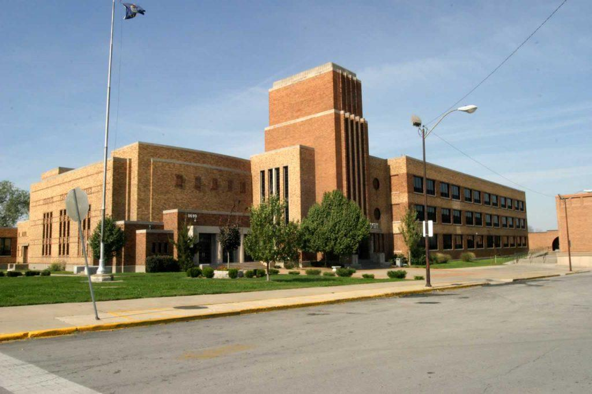
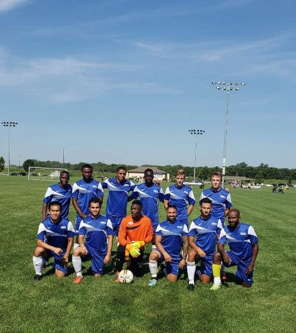
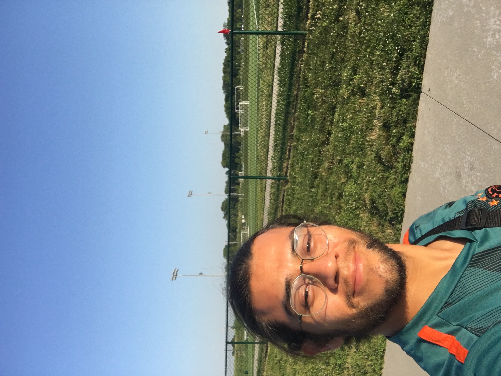
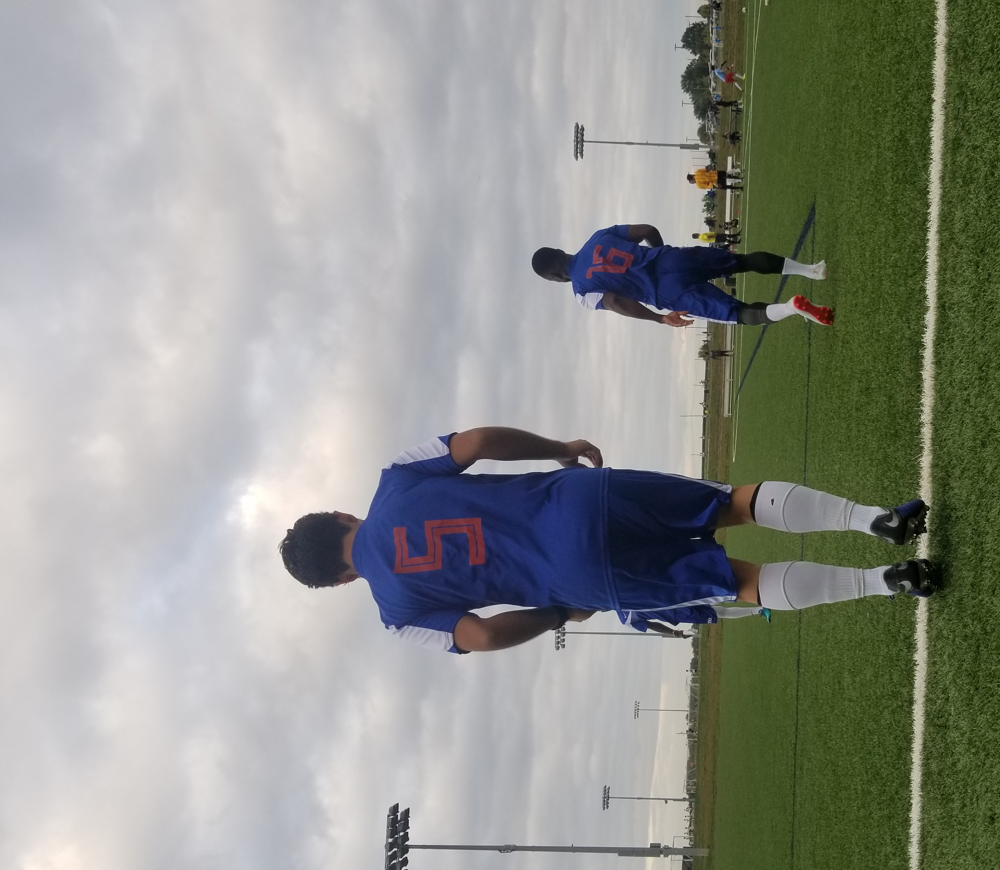
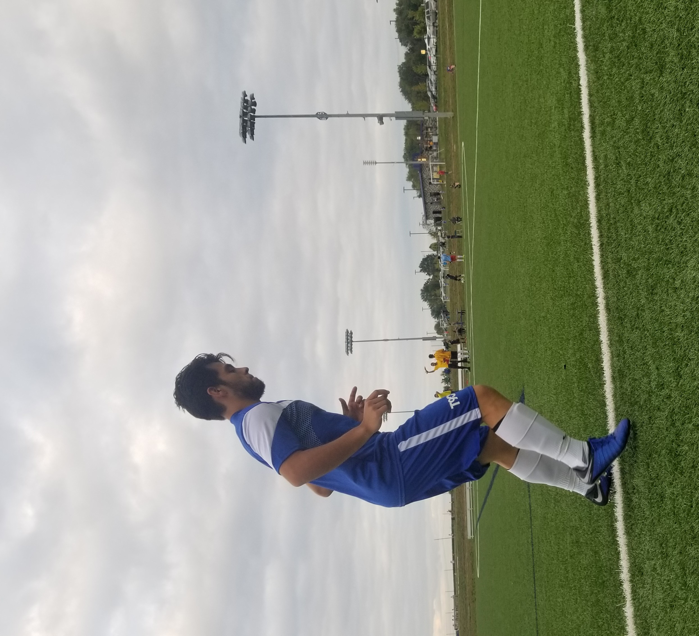
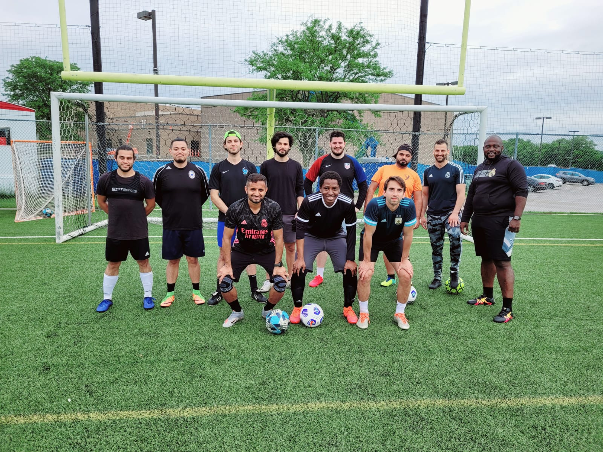

Early Life
As a young kid, sports were not something that was around the house.
My love for the sport of soccer grew out of the countless hours that I spent playing on the streets of Xalapa, Veracruz.
Veracruz is a beautiful southern costal state of Mexico with beautiful beaches, a culture that revolves around the family and traditional dancing, and of course the amazing food.
From a very early age, I knew that sports were one of the few things that fueled my spirit and made me feel complete and happy.
At the age of 7 I would compete againts the boys
in my neighborhood. Most of them being older than I was, it made it difficult for me to pick up the game and I remember coming back home to grandma covered in tears because the
older kids would show no mercy when playing. This fueled my determination to become a better soccer player and show the older kids that I could be better than they were.
Unfortunately all of my early succes in soccer had to take a backseat.
At the age of 8 my family and I immigrated to the US. We arrived at the KCI airport on New Year's Day at 1 am.
I remember arriving at Kansas City and feeling overwhelmed and lost. Still wearing some shorts and t-shirt that I had on for a few days I received many strange looks as this 8 year
old boy was wearing summer clothes in the middle of a Kansas winter. Due to setbacks of not knowing any english, no friends other than one cousin, and being an akward shy boy, soccer
slowly faded into a memory and for many years it was not a part of my life.
Young Adult
As I continued to grow, sports were a large part of my life. It allowed me to make friends (and see what kind of friends were no good), It allowed to me grow as a person,
and as a young man with enless amounts of energy and hormones running through him, it made a magnificent therapeutic activity. As a sophmore in high school, I decided to join
the high schools soccer team. Not having touched a soccer ball for many years, and potentially missing out on what most consider important developmental years for a sport,
I found myself needing to catch up again. Although my sophmore year I played in no games, it gave me an opportunity to practice and refine the skill of soccer. The following
year as Junior, I had spent my entire summer training and conditioning so that I could get my chance at playing and start on the team. This year I started for the JV and found
myself on the bench for the majority of the year. Frustrated with this aspect of the school team, I decided to go out of my way and look for other clubs that would allow me to
play and continue to get better.
One game in which we face Olathe Northwest high school, our team was loosing 6-1 at half time. On this day I got my opportunity to play in the varsity team and man did it feel good.
The coach being upset that his prime team was not doing well, ended up subbing out 5 players. The remaining half of the game looked completly different and I ended up scoring two goals.
Even though we ended up loosing the game 6-4, it was very rewarding to know the substitute players had more to prove and therefor outperformed the starters.

The highschool I attended. Sumner Academy of Arts & Science.
As senior year came around the corner, I found myself in a dispute with the coaches. One coach in particular had no problem stating that I was never going to be good at soccer.
My other coach, a rough looking polish man that barely spoke english, was impressed with my athletic ability, and what I lacked in skill I made up for it by being stronger, faster, and smarter
on the field. This was a particular bittersweet year as I only played one game due lack of adequate grades. This lead me to join a club team that was associated with Blue Valley school district.
The last few months of my senior year I spent training with this club team during the spring in order to get ready for the summer schedule. Both of my coaches being immigrants, Bob was a husky man
from Australia, and the head coach Danny McGaw was a young lad that came from Englad and had to retired professional soccer at the age of 18 due to a back injury.
Both of these man surrounded me with positivy and encouragement and led me to be a better human being on and off the field and smarter soccer player. All this would end for me due to an injury.
At the age of 19 during the first 10 min of a game, a very malicious goal keeper determined to not let me score, decided to play extremely dirty and decided to slide tackle into my knees.
Although I ended up scoring anyway, I took a massive hit on my knee and the momentum from the goalie and the tracktion from my cleats forced my leg to hyperextend and I found myself
on the floor not moving after scoring. As my teammates surrounded me, I knew what had happened probably did not look good. I was carried of the field and leaving the game with pain, I
knew something was not right. A couple of weeks later I was told that I had a tear in my Posterior Cruciate Ligament (PCL). This was devatating to me, as I knew my family nor I could
afford the treatment and so once again I found myself having to give up soccer.
 Scheels Soccer complex in Overland Park, KS. This is where I spent the majority of my young adult games.
Scheels Soccer complex in Overland Park, KS. This is where I spent the majority of my young adult games.
Adult Life
The years passed. The pain in my knee slowly went away but I always found myself lacking the confidence in my knee to do what it was supposed to do. After my injury at 19, I worked as a
welder until the age of 22. At that time I decided to start college. I went back to a community college where I received two associates, and decided to push my luck with school and
headed off to engineering school at KU. I found out really quick this was not for me and so I became a nurse. First starting as a CNA (nursing assistant), I worked in many nursing homes and
assisted living fascilities. Once I graduated I became an RN but also quickly found myself not liking it.
As an adult, I once again found myself realizing I need to do something I enjoy and so I returned to soccer once again at the age of 26. I underwent many stem cell shot therapies and rehab
and immediately treated soccer as if it was my life career. I spent every waking moment refining my skill and conditioning. Practicing with many friends and finding plenty of soccer
scrimmiges and adult leagues to get the most experience I could, a short year later I found myself playing soccer semi professionally for a third division team called the Des Moines Menace.
Unfortunately I did not get much starting time but it did provide a place for me to have fun and practice with a group of players whos skills were exceptional.
After that season I was not
called back to play again and so I tried out for the KC Comets, a professional indoor soccer team. They too did not believe I could provide what they needed but I was allowed to practice
with them. Little by little I kept knocking at the door or truly making soccer my life career but eventually decided that I was in no position to keep at it. The countless hours in the gym,
the time sacrificed with friends and family, the hours spent on the field practicing my touch and shootin skills, not to mention the injuries as they are an inevitable. Eventually I decided
soccer should just be something I do for fun.
JOCO Adult regional tournament 2018 with Focus FC.

Me before a casual sunday league game.

Pre-Match warm up before regular season game.


Diversidad FC preseason match.
